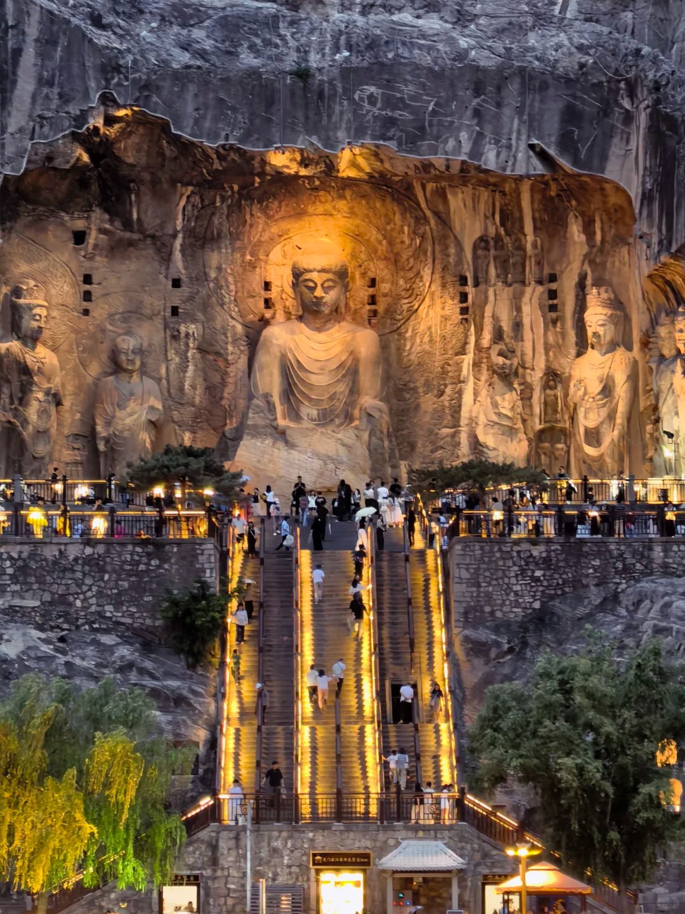

Longmen Grottoes
The Longmen Grottoes are one of the most famous historical attractions in Luoyang and a UNESCO World Heritage Site. They are known for thousands of Buddhist statues carved into the cliffs. Visitors can admire the beautiful stone carvings and learn about ancient Chinese Buddhist art.
For more information, visit the UNESCO World Heritage Centre.
